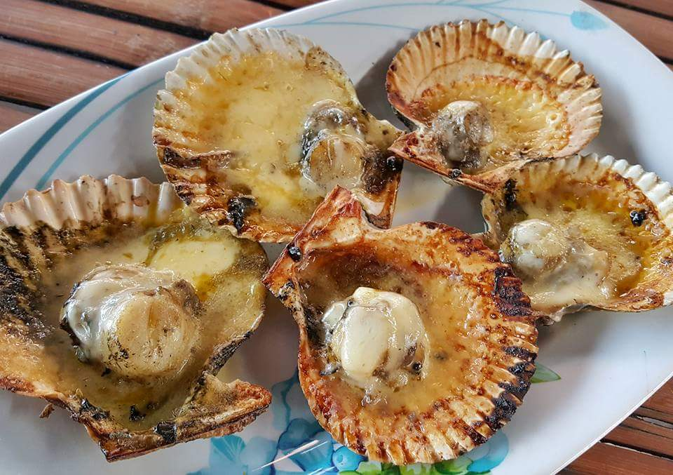
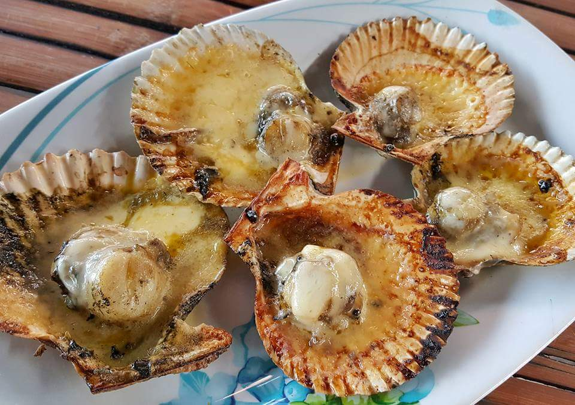

Food and Culture
 



Located in the north of Cebu, Consolacion is a town where rich traditions and flavorful cuisine come together to create a truly unique experience. Known for its cultural pride and delicious local dishes, this vibrant municipality offers a taste of Cebuano heritage like no other.
Come explore the perfect blend of food and culture that makes Consolacion a hidden gem worth discovering!
Oysters (Talaba)
Consolacion’s coastal areas make it a hotspot for high-quality fresh oysters. These are commonly served raw with vinegar, grilled, or baked with cheese and garlic. Oysters have become a defining part of the local cuisine, with many families and barangays priding themselves on their seafood farming traditions.
Seafood Based Dishes

Consolacion's coastal proximity ensures a steady supply of fresh seafood,
inspiring dishes that highlight the sea's natural flavors. Milkfish,
shellfish, and other catches are prepared using traditional methods,
emphasizing simplicity and freshness. These seafood staples reflect the community's
connection to its environment and are cherished in both daily meals and festive gatherings.
This deep culinary tradition showcases the town’s pride in its coastal heritage.
The abundance of fishponds and farms leads to creative seafood preparations,
including grilled bangus (milkfish), kinilaw (ceviche-style dishes),
and shellfish cooked in coconut milk.
These dishes are popular at community fiestas.
Local Rice Cakes

These rice-based treats are commonly found in barangays like Poblacion and Tayud during local fiestas or daily markets.
Families often prepare them, selling them as a source of income.
Variations of puto (steamed rice cakes) and bibingka (baked rice cakes) are popular, with some versions
incorporating local ingredients like latik (coconut syrup) or ube (purple yam). These rice cakes not only offer a
taste of Consolacion’s rich agricultural heritage but also play a key role in community celebrations.
It is also a symbol of Consolacion’s deep agricultural roots,
reflecting the abundance of locally grown rice and coconuts.
Many families use these treats to connect with their cultural traditions,
passing down recipes through generations. The process of making puto and bibingka brings the community together,
especially during harvest seasons and special occasions.
Must try Restaurants in Consolacion!


Who would have thought that Consolacion—a bustling town just north of Cebu City, often known for its growing urban vibe—holds a treasure trove of culture and tradition? From the timeless art of sarok weaving to the vibrant Sarok Festival that lights up the streets with color and dance, this town celebrates its rich Cebuano heritage. Add to that its heartfelt fiestas, a strong sense of community, and the perfect blend of old and new, and Consolacion transforms into a cultural gem waiting to be discovered!
Let's Move on to their Culture!
Sarok Weaving
Sarok weaving is a traditional craft in Cebu, particularly in Consolacion. A sarok is a handwoven hat made from indigenous materials such as bamboo, nito vines, and banana leaves. It was traditionally used by farmers as a protective covering from the sun and rain during their daily agricultural activities.
Seafood Heritage

Seafood farming is deeply rooted in Consolacion's culture, especially in coastal barangays. Residents take pride in their oyster farms and fishponds, which not only provide sustenance but also foster community gatherings where seafood dishes are prepared and enjoyed collectively.
These dishes not only highlight the town's rich seafood farming heritage but also bring people together during celebrations and fiestas. The town's focus on fresh, simple ingredients preserves its connection to the coastal environment while honoring culinary traditions. This sense of community and pride ensures that seafood remains a central part of life in Consolacion.
Miligoy de Cebu

Miligoy de Cebu is a traditional folk dance that originated in Consolacion, Cebu. It is a courtship dance that began with couples expressing their love for each other. Over time, it evolved into a social dance performed by several couples during social gatherings like baptisms, weddings, and special programs